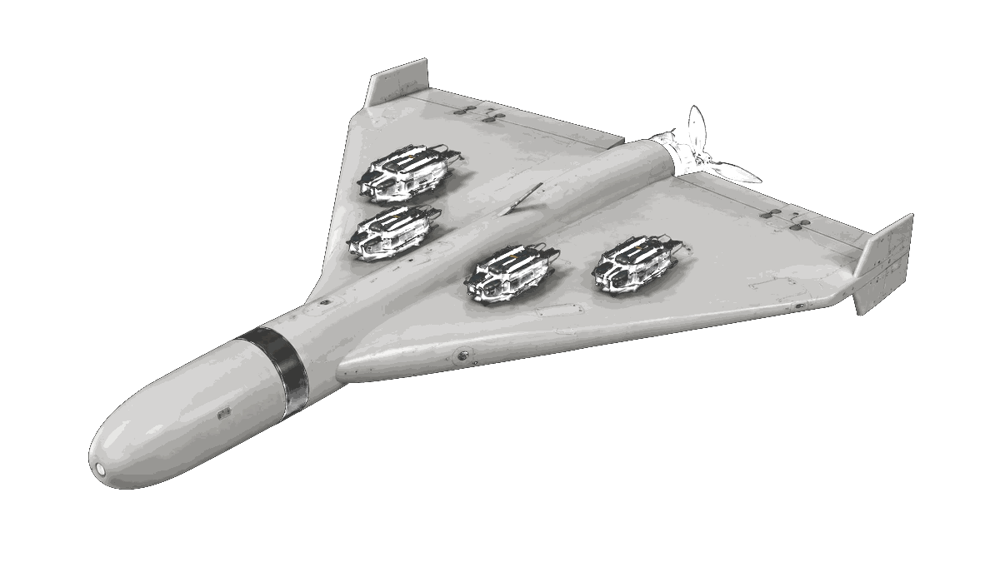
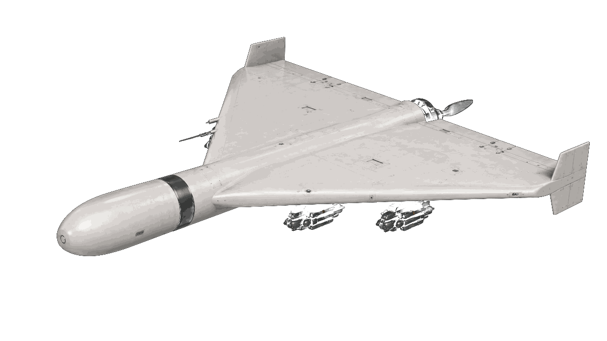
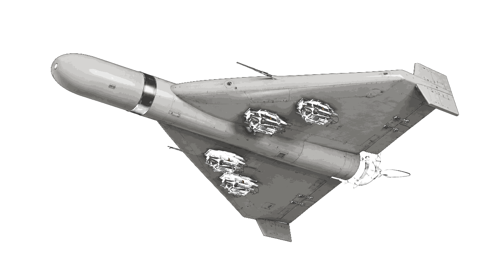
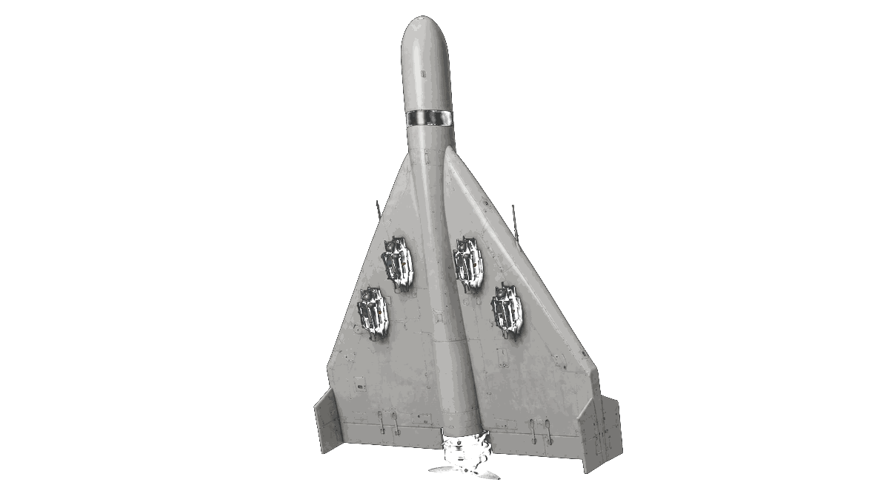
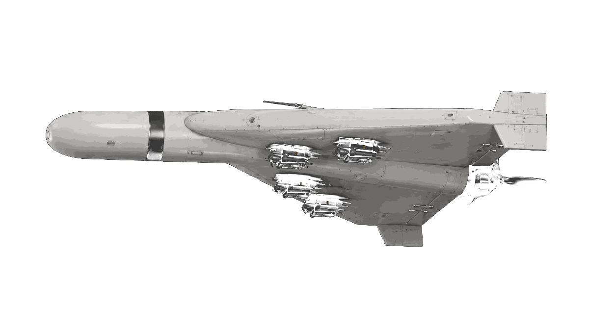
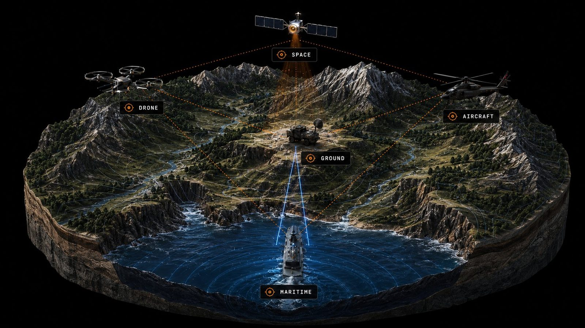

A high-altitude autonomous persistence system built for surveillance, target acquisition, and precision strike — across two purpose-built variants from a single airframe lineage.





Valley is the advanced quantum AI system solving interoperability and physical embodiment — a single command chain that lets manned and unmanned platforms across land, sea, space, and air communicate, reason, and act as one organism.

Valley connects widely used defense equipment such as MQ-9 Reaper ISR aircraft, RQ-20 Puma / RQ-11 Raven tactical drones, Black Hornet nano-drones, UH-60 Black Hawk / MH-60 Seahawk helicopters, Stryker / JLTV / MRAP vehicles, PackBot / TALON ground robots, patrol boats, radar feeds, EO/IR cameras, satellite imagery, SATCOM, and ATAK-style tactical maps into one command layer.
↳ Valley would not replace the equipment. It would make the equipment act like one coordinated force instead of ten disconnected systems.
Valley connects common emergency-response equipment such as DJI Matrice 300/350 RTK, Skydio X10, thermal cameras, firefighter SCBA systems, helmet cameras, body-worn location tags, gas detectors, building CCTV, fire-panel data, ladder trucks, ambulances, police traffic units, utility shutoff systems, and indoor robots like PackBot / TALON.
↳ For civil missions, the value is not combat — it is faster search, safer firefighter entry, better multi-agency coordination, and a live 3D picture of a dangerous environment.
Next-generation Ankosha development — extending the platform from atmospheric persistence to stratospheric reach.